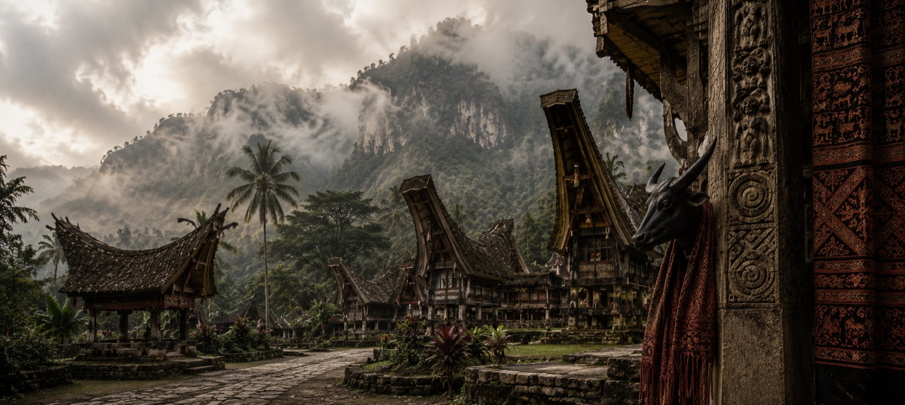

Rambu Solo' — the Toraja funeral rites
Rambu Solo' is not a performance — it is the most important ceremony in Torajan life, and we place a very small party inside it with the guidance of a host family.
Over seven days you move from Makassar into the highlands, staying in tongkonan-adjacent guesthouses, attending the rites with a cultural interpreter, and spending unhurried afternoons among the cliff graves and the rice terraces of Batutumonga. One departure, timed to the calendar, capped at sixteen travellers.
The seven days
Other seasonal windows
Ceremonies and natural events we build single departures around, timed to the year.
The thanksgiving counterpart to Rambu Solo' — a rite of joy and house-blessing.
A mounted spear ritual on the west coast, timed to the sea-worm moon.
The night of monsters and fire, then a full island day of silence.
The Sasak sea-worm harvest and the legend of Princess Mandalika.